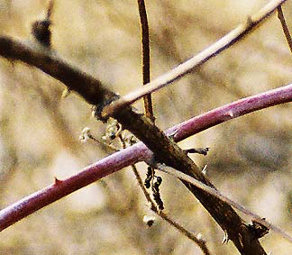

Saturday, March 13, 2004
The Little Match Girl
The image is bathetic: the little motherless girl, a rag-clad match-seller, crouched in a snowy midnight alleyway on New Year's Eve. Her shoes -- her dead mother's over-large and dilapidated slippers -- fell off as she ran from a speeding carriage, and and a taunting boy has stolen them. She is wretchedly cold and barefoot. If she goes home her father will beat her: she has not sold her quota of matches. In the bright windows along the street are festive tableaux. The smell of holiday food is in the air.
Desperate, she strikes her matches for warmth. At the heart of each flame, she hallucinates scenes from which she is excluded: a warm, bright room, a roaring fire in the hearth; a table set with wonderful food; a magnificent Christmas tree strung with beautiful lights. Scenes of hearth and home, of family, safety, conviviality and celebration. She is the ultimate outsider, the excluded one, the invisible one.
Finally, in extremis, she strikes the last match and, within the flame, sees her grandmother, who descends from heaven, gathers her up, and bears her aloft.
The story ends at daybreak, New Year's morning: her frozen body in the alley . Passersby look on, saddened. In their holiday distraction, they'd overlooked her the night before. Would they have opened their door to her if she'd knocked ?
As a child, I'd always wished that Hans Christian Anderson had left out that last scene, had not sown that poisonous nugget of doubt into the bright dream of beatific reunion. I preferred magic, sleight of hand, the unconditionally happy ending to the near impossible task of faith.
Some of us are born outsiders. It is a biological given, neither virtue nor vice, a constitutional hyper-sensitivity, a defect of filtering, a overdevelopment of wariness and caution, an underdeveloped sense of pleasure with interaction. We marvel at the gregarious, the convivial, at their easy pleasures and unconflicted appetites, at their bulging date-books. We watch them departing for their week-ends, their gatherings, their get-togethers. They are connected even in absentia: cell phone, email. We peer into their well lit windows at their parties, and watch them enjoy themselves . For us the self is not an occasion of enjoyment. It is a barrier, a skin of displeasure, a mirror-hall of dysphoric hyper-awareness. Are we lonely ? Are we hungry ? Are we envious ? Maybe a little bit.
In spiritual circles we are found in hermitages, pursuing the most apophatic of practices. The idea of a "prayer circle" gives us hives. We can be found perched on the edge of a back pew, ready to bolt before the parishioner to our left can tender the Hug of Christ, or the hearty minister can come at us with his beatific handshake and invitation to coffee hour. Better yet, we sit off hours in the empty, shadowy church. Psalmistically speaking, we inhabit the threshold of the house of God. Quick-eyed Love passes us the platter of cold-cuts; we decline, and flee.
Desperate, she strikes her matches for warmth. At the heart of each flame, she hallucinates scenes from which she is excluded: a warm, bright room, a roaring fire in the hearth; a table set with wonderful food; a magnificent Christmas tree strung with beautiful lights. Scenes of hearth and home, of family, safety, conviviality and celebration. She is the ultimate outsider, the excluded one, the invisible one.
Finally, in extremis, she strikes the last match and, within the flame, sees her grandmother, who descends from heaven, gathers her up, and bears her aloft.
The story ends at daybreak, New Year's morning: her frozen body in the alley . Passersby look on, saddened. In their holiday distraction, they'd overlooked her the night before. Would they have opened their door to her if she'd knocked ?
As a child, I'd always wished that Hans Christian Anderson had left out that last scene, had not sown that poisonous nugget of doubt into the bright dream of beatific reunion. I preferred magic, sleight of hand, the unconditionally happy ending to the near impossible task of faith.
Some of us are born outsiders. It is a biological given, neither virtue nor vice, a constitutional hyper-sensitivity, a defect of filtering, a overdevelopment of wariness and caution, an underdeveloped sense of pleasure with interaction. We marvel at the gregarious, the convivial, at their easy pleasures and unconflicted appetites, at their bulging date-books. We watch them departing for their week-ends, their gatherings, their get-togethers. They are connected even in absentia: cell phone, email. We peer into their well lit windows at their parties, and watch them enjoy themselves . For us the self is not an occasion of enjoyment. It is a barrier, a skin of displeasure, a mirror-hall of dysphoric hyper-awareness. Are we lonely ? Are we hungry ? Are we envious ? Maybe a little bit.
In spiritual circles we are found in hermitages, pursuing the most apophatic of practices. The idea of a "prayer circle" gives us hives. We can be found perched on the edge of a back pew, ready to bolt before the parishioner to our left can tender the Hug of Christ, or the hearty minister can come at us with his beatific handshake and invitation to coffee hour. Better yet, we sit off hours in the empty, shadowy church. Psalmistically speaking, we inhabit the threshold of the house of God. Quick-eyed Love passes us the platter of cold-cuts; we decline, and flee.
Ribs

Thursday, March 11, 2004
Provisions

Three Provisions For A Hermitage
i.
I did not neglect the matter of provisions.
I studied, to this end, extreme accounts
of polar expeditions, long ocean voyages,
journeys to the world’s most improvident corners,
then combed through narratives of desert stylites,
and the gathas of mountain recluses
for hints of panem quotidianum --
grasses, locusts, air, handsful of old rice;
and, finally, I scoured the manuals
of quartermasters, tenzos, cellarers, wardens,
those ordained to feed men under Rule,
searching the texts for what would best suffice
my simple, temperate zone hermitage.
ii.
The cellarer, a wise man of settled habits,
advised I amply stock my hermitage
with flour, rice, peas, dried fruits, root vegetables,
and, for savor, oil, coffee, salt, enough
for a long sojourn. “Only fools,” he said,
“ignore incarnation’s self-evidence,
so sink a well, and draw up all you need
for drinking, cooking, bathing. Cultivate
a kitchen garden plot, nine or so bean rows,
and weed it with diligence. All bounty
flows, graceful and mysterious, from God,
into your keeping. Do not break His trust.
Let everything sustain you. Give thanks and praise.”
The tenzo, accomplished and of a way-seeking mind,
advised, “For water, situate yourself
by a clear, quick stream, one equally good
for music and drinking, where the moon floats,
and where snowmelt instills a taste of dust
to tell your tongue that it is also dust.
Like hollow stones set out to catch rainfall,
your begging bowl will often brim with wind,
so learn to forage -- roots, nuts, berries, leaves.
The earth is generous. Ten thousand fruits
arise from emptiness and then return,
as thoughts do, and as you will, too, someday.
All is provisional. Wells sour. Springs fail.
So seek your anchorage within the Source.”
iii.
The afternoon can barely lift its head.
Storms muster in the west, and, to the east
the restive ocean gathers at the gates
of Harborview and Pigeon Cove. The year
falls past fall again, the same old cadence.
I can’t fatten or slumber, so I sing
along, my voice as brittle and apt to break
as a cheap glass ball mis-hung on a fractured branch --
I am the wren that quivers in the mouth
of the stranger’s broken eaves. I am the snow
that slides across its blank, unmoving eye.
Stars flicker between branches. Christmas lights
blink on and off, too fast, monotonous
emergencies of red and green. Herod
mugs with schoolchildren. White bulbs detonate,
blinding -- God, I can’t do this anymore.
I’m sick of stories, yours, mine, them all.
I have desired to go where words all fail.
Will Providence attend me, even there ?
2002-2003
Sunday, March 07, 2004
Rain And The Rhinovirus
The slate gray, billowing clouds finally moved west, taking the sudden gusty rain with them. I had been sitting in my car waiting for the shower to pass, watching the Charles River fall over its little spillway, impatient to get to my walk. There's nothing like a good old fashioned cold to bring out one's peevishness. One's head -- the brain pan, for goodness sakes -- becomes host to a miraculously self-renewing spring, bubbling up from nostrils and eyes and throat. The unexpected downpour seemed a watery taunt. Childish, hankering, I taunted back: Rain, rain go away/ little Paula wants to play.
There was a part of me that was at peace. I was warm and dry. The rain noodled pleasantly on the car roof. The clouds were extravagant, interesting. But nonetheless, there they were, all three kilesas at once, doing their little vaudeville routine: the wanting, the pushing away, the clamoring, impatient, snot-addled, illusory self.
Finally, the rain stopped.
So I went out, avec camera again, into the late winter woods. The landscape's pallette has been narrowing week by week to dun gray, brown, black. Subtle purple and green branches, by contrast, appeared neon-bright. Green-gray lichens seemed positively gaudy. The drabness honed attention. I noticed that form, underfoot, was giving way to a humid compost of emptiness: mud and decaying leaves. I took a picture of the delicate ribs of a tattered, rotting leaf on a bed of sludge. My own ribs someday.

Almost out of film, I picked my way through the brush and trash of the municipal, post-industrial riverbank, drawn by some clustered clumps of pale stalks rising from the water just offshore. They were mudstained and wet up half their length, then ghostly beige. I got closer and peered into the water from which they rose: the eye of a dead fish stared back.
As I walked back to my car, I remembered that it's Lent: the season of relinquishment, of fasting. The bleak stretch between Fat Tuesday and the Easter Ham. The final dregs of winter, just before the earliest, most tentative hints of spring. Which is, after all, the prize. The resurrection and the life. The binge that follows the purge. Brought to you by your heavenly host, JC. Who descended and rose and ascended and who will be back for a rapturous return engagement. Get your Godside tickets now. Christian "salvation" with its complicated timetable and mechanics exasperates me. Is there a Christian equivalent of When you meet the Buddha on the road, slay him ?
The green mountains, replies Dogen, are walking.